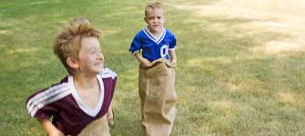

PERCEPCIÓN
Este juego consiste en realizar una carrera, en la que se puede establecer salida y llegada, de manera que el niño o niña se ha de colocar dentro en un saco y tendrá que saltar con los pies juntos para avanzar mientras sujeta el saco con las manos. Se puede realizar de forma individual o colectivamente. En este último caso, se puede realizar carreras y relevos por parejas o equipos. La carrera de sacos se puede emplear para trabajar el equilibrio, además de la coordinación motriz.
A la hora de trabajar la propiocepción, se puede ajustar el nivel de
dificultad: Lo óptimo sería comenzar utilizando una superficie estable, apoyo bipodal (con dos pies) y con ojos
abiertos, para ir aumentando en dificultad sobre superficie inestable, apoyo unipodal (un solo pie) y ojos cerrados,
acompañado de movimientos con cargas adicionales y/o perturbaciones externas.
VIDEO
RECOMENDACIONES
- Espacio: Se recomienda un espacio amplio con una superficie segura y sin muchos obstáculos.
- Tiempo: Es variable, ya que según el tiempo que se disponga o desee la persona. Aun así, se puede establecer un tiempo limitado para llegar a la meta.
MATERIAL
- Los materiales que se requieren para llevar a cabo la actividad son bolsas, sacos tejidos, sacos de patatas o arroz, etc. Lo ideal sería que como llegaran a la altura de las caderas.